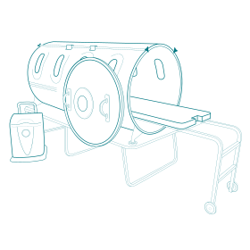

OXYCLAIR propose une nouvelle forme de thérapie bien-être 100% naturelle par oxygénothérapie hyperbare.

Utilisée en milieu hospitalier pour soigner des pathologies graves suite à un traumatisme ou une chirurgie, la médecine hyperbare a démontré que l’oxygène administrée sous pression pénètre les cellules, ce qui permet au corps de se régénérer.
OXYCLAIR est le premier concept de ce type de thérapie désormais accessible à tous. Les soins sont dispensés sous forme de séance détente, dans le confort d’un espace encadré par des professionnels de santé.
La séance de soins est réalisée dans une chambre pressurisée à 1.4 ATA, qui permet de régénérer tout l’ensemble du corps. Il s’agit d’une méthode de soin globale bénéfique pour le patient.
Cette thérapie 100% naturelle stimule la capacité du corps à s’auto régénérer grâce à l’action combinée de l’O2 sous pression. L’augmentation de la pression permet de forcer l’oxygène à pénétrer dans les tissus ce qui permet d’oxygéner des parties du corps qui ne reçoivent pas suffisamment d’oxygène par le simple processus de la respiration.
OXYCLAIR propose une véritable réponse à l’amélioration de la qualité de vie.
Les Bienfaits
Bénéfices sur la vie quotidienne
L’Oxygénothérapie proposée par Oxyclair permet d’améliorer les pathologies de la vie quotidienne en réalisant un traitement préventif et curatif.
La mise du corps sous pression à 1.4 ATA combinée à l’inhalation d’oxygène réduit l’inflammation et l’œdème, soulage la douleur et améliore la perfusion et l’oxygénation des tissus.
L’oxygénothérapie augmente progressivement le tonus musculaire et permet au patient de gagner en autonomie et en qualité de vie.
Action anti-inflammatoire
par vasoconstriction des petits vaisseaux.
Action antalgique
grâce à la réduction de l’inflammation et de l’œdème.
Diminution de l’anxiété et du stress
par augmentation et redistribution du flux sanguin cérébral lié à une plus grande disponibilité de l’oxygène.
Amélioration du tonus musculaire
par augmentation de la diffusion d’O2 dans les muscles.
Amélioration de la circulation sanguine par l’effet de vasoconstriction : amélioration de la microvascularisation.
Diminution de la fatigue chronique
par l’augmentation d’hémoglobine.
Augmentation des défenses immunitaires
par la régénération de la cellule qui s’opère en stimulant la production d’énergie, ce qui favorise l’action des globules blancs (Effet bactéricide sur germe anaérobie).
Diminution des maux de tête
grâce à une vasoconstriction des vaisseaux cérébraux due à la pression.
Performance Sportive
L’élévation du taux d’Oxygène dans le sang entraîne une augmentation de la ventilation maximale et donc une meilleure endurance.
Les muscles sont mieux oxygénés et en minimisant la production d’acide lactique généré par l’effort, les muscles récupèrent mieux après l’effort.
Amélioration des performances sportives.
Préparation sportive
Augmentation du tonus musculaire
par une meilleure oxygénation des muscles.
Meilleure résistance musculaire
- par diminution de la fréquence cardiaque
- diminution de la production d’acide lactique (qui provoque crampe et courbature) et d’acide gastrique après l’effort.
Récupération sportive
notamment après une déchirure musculaire.
Récupération post chirurgicale et cicatrisation
L’élévation du taux d’oxygène en caisson hyperbare stimule la synthèse du collagène et la prolifération des fibroblastes qui produisent le collagène, clés pour le processus de cicatrisation et de réparation tissulaire.
Accélère la cicatrisation des plaies, des brûlures, des muscles, des ligaments et des os.
Réduit l’inflammation, l’œdème, soulage les douleurs.
Accélération de la cicatrisation post chirurgicale
des plaies et des tissus.
Accélération de la cicatrisation des blessures
ligaments et tendons.
Consolidation osseuse plus rapide
par la régénération accélérée des ostéoblastes (cellules formant le tissu osseux).
Diminution du temps de récupération
après une chirurgie ou un traumatisme.
Meilleure récupération
après une entorse.
Rééducation, réadaptation.
Présentation de l’équipe encadrante et du concept OXYCLAIR
{kind=link}
{kind=link}
OXYCLAIR propose une solution thérapeutique naturelle en utilisant pour la première fois en France un caisson hyperbare 1.4 ATA souple utilisé pour le bien-être et pour une amélioration de la qualité de vie du patient.
Installé dans le centre de médecine naturelle du Dr Tourrasse, proposant des traitements naturels aux patients par l’homéopathie, la phytothérapie, l’acupuncture, l’ostéopathie, la réflexologie, l’hypnothérapie, OXYCLAIR complète l’offre de ce Centre en proposant des traitements d’oxygénothérapie hyperbare 1.4 ATA à action antioxydante (anti-inflammatoire, antalgique…) et régénérante.
OXYCLAIR propose une solution BIEN-ÊTRE de récupération innovante et naturelle, qui alimente l’ensemble du corps en oxygène lui permettant ainsi de se régénérer naturellement.
Les séances en chambre souple pressurisée sont supervisées par une professionnelle de santé.
Fondatrice d’OXYCLAIR et Ostéopathe D.O., Claire Colonna d’Istria, propose des séances dans le confort d’un espace conçu pour offrir un moment de détente tout au long de la séance avec lecture et musique à disposition.
Le caisson hyperbare
{kind=link}
{kind=link}
{kind=link}
L’Oxygénothérapie hyperbare de Bien-Etre c’est l’utilisation de l’oxygène à une pression supérieure à la pression atmosphérique (soit 1.4 ATM) permettant une régénération cellulaire.
Dans une cabine hermétique à paroi souple, la mise en pression est réalisée par un compresseur et l’oxygène est fourni par un extracteur d’oxygène.
Cette technologie permet un traitement parfaitement sécurisé pour le patient.
Le caisson hyperbare utilisé par Oxyclair est un caisson Revitalair 430 BIOBARICA Chambre hyperbare monoplace, dispositif médical avec CE médical.
La durée d’une séance varie entre 60 min et 90 min suivant le protocole.
Nous proposons des forfaits de 3, 5, 10, 20 séances.
Le nombre de séances est variable en fonction de l’état du patient.
07 83 00 57 10
Téléphone
Allée Françoise Dolto
45160 Olivet
Le Cabinet
contact@oxyclair.com
Courriel
Pour toutes demandes d’informations